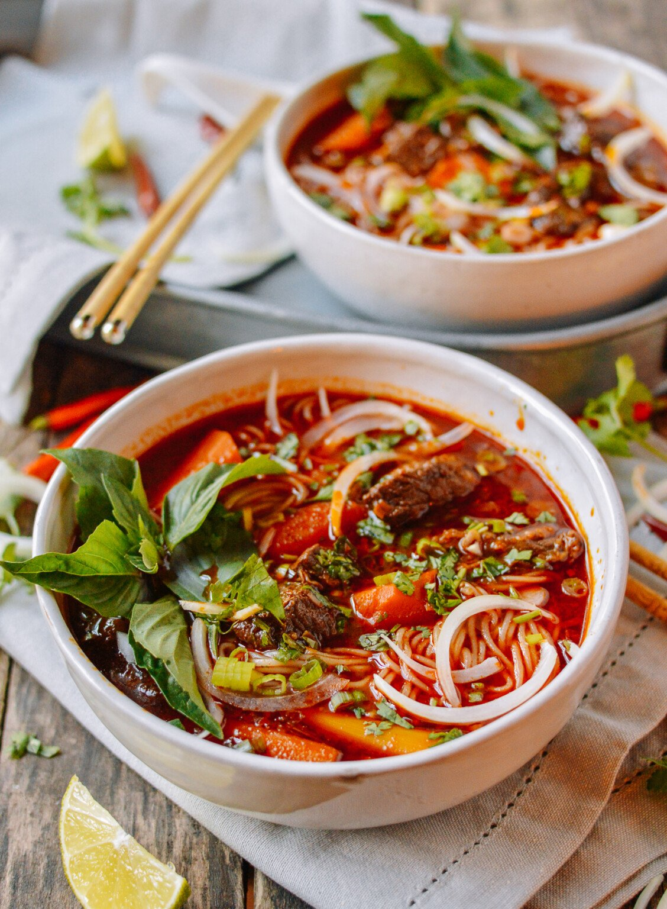

Bo Kho

Description
Bo Kho is a spicy and flavorful Vietnamese beef stew that makes a pretty epic bowl of soup. At its most basic, it is considered a “beef stew,” given it can be prepared as a soup or a thicker stew. Bo Kho is flavored with chili, five-spice, fish sauce, lemongrass, plenty of garlic, and tomato. Its familiar red color comes from the addition of fragrant annatto.
Ingredients
For the Beef:
- 2 to 2/12 pounds boneless beef chuck or brisket (cut into 1 1/2-inch chunks)
- 2 cloves garlic (minced)
- 3 tablespoons ginger (minced)
- 5 tablespoons fish sauce
- 2 1/2 teaspoons five-spice powder
- 1 1/2 teaspoons brown sugar
For the Rest of the Stew:
- 3 tablespoons oil
- 1 stalk lemongrass (cut into 3-inch lengths)
- 2 stalks lemongrass (minced)
- 8 cloves garlic (minced)
- 1 onion
- 4 tablespoons tomato paste
- 8 cups water
- 2 cups pure coconute water/juice
- 2 star anise
- 1 teaspoons ground black pepper
- 1 teaspoon chili powder
- 1 teaspoon ground annatto
- 1 tablespoon paprika
- 8 large carrots (peeled and cut on the bias into 1 1/2-inch chunks)
- 1 teaspoon salt
- 3 tablespoons soy sauce
- 3 tablespoons chili oil
- 1/4 cup coarsely chopped fresh cilantro leaves
- 1/2 cup Thai basil leaves
- 1/2 cup thinly sliced raw onion
- lime wedges
Steps
- First marinate the beef. Combine the beef with the garlic, ginger, fish sauce, five-spice powder, and brown sugar until each piece is evenly coated. Marinate for 30 minutes.
- Next, heat 3 tablespoons of oil in a large stock pot or Dutch oven over high heat. Add the stalks of lemongrass and allow them to infuse the oil for 1 minute. Next, add the minced lemongrass and garlic. Cook for 2 minutes.
- Add the onions and cook until translucent. Then add all of the beef to the pot, and brown evenly on all sides. Add the tomato paste.Add the onions and cook until translucent. Then add all of the beef to the pot, and brown evenly on all sides. Add the tomato paste.
- Stir and cook uncovered for 5 minutes. Add the water, coconut water, star anise, ground black pepper, chili powder, annatto, and paprika. Bring the mixture to a boil, reduce the heat to medium low, and simmer, covered, for 1 hour.
- After an hour has passed, add the carrots, salt, soy sauce, and chili oil. Simmer for another 40 minutes.
- To serve, remove the large lemongrass stalks and any star anise pods you can fish out. Transfer to bowls, and ladle the soup over the top.
- Garnish with cilantro, Thai basil, and raw onion, and serve with some lime wedges on the side.
Home